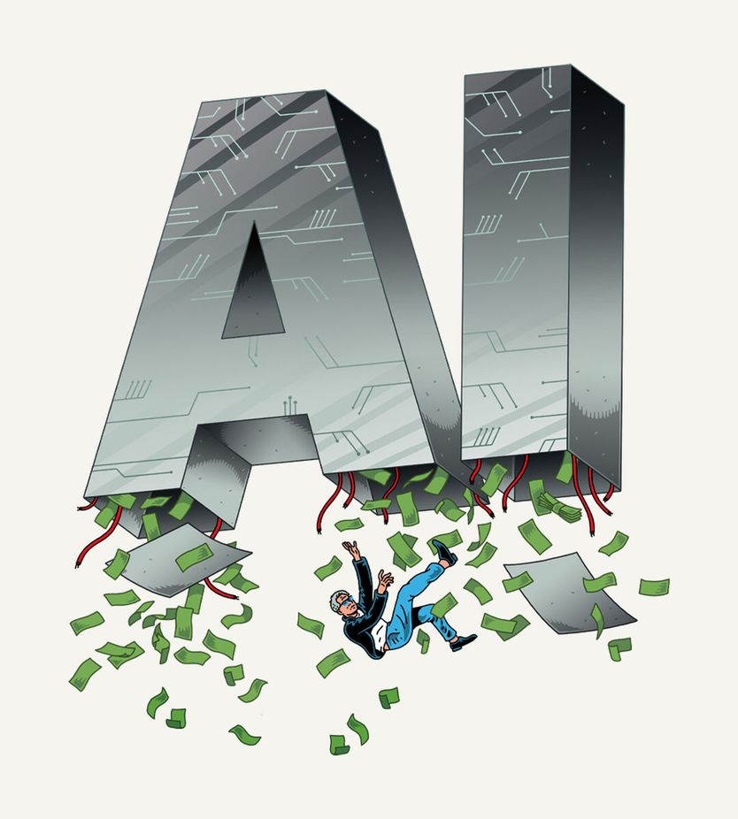

为什么你该预期一场 AI 崩盘
Why you should expect an AI crash
但不必然是一场金融浩劫

- 押注空前：有预测称 2025 至 2032 年 AI 投资年均相当于美国 GDP 的 3.6%，AI 敞口最大的十只股票已占标普 500 近四成，家庭持股占净资产 38%，比互联网泡沫顶点还高约四分之一。
- 历史规律是技术革命与投资亏损并存：从运河、铁路到光纤，出钱修路的人常常血本无归，真正赚钱的是在基础设施上做出生意的人。
- 这次更像股市级崩盘而非金融危机：美国 AI 资本开支多是进口芯片，直接敞口仅约 GDP 的 0.3%，且融资以股权为主，五大云厂商债务只占市值 6%。
- 真正的悬念在技术本身：硅谷认为超级智能所需算力已就位，递归式自我改进最快明年出现，而一场政治反弹仍可能打断这一进程。
还能有什么消息比这更戏剧化？人工智能模型正以几乎无人预见的速度变得更强。下周，前沿模型公司 Anthropic 预计将挂牌上市，这可能是史上规模最大的 AI 公司 IPO。然而在某些方面，AI 热潮看起来摇摇欲坠。一场性与间谍交织的丑闻正震动头号芯片制造商英伟达。刚赢下中期选举的美国民主党，正摩拳擦掌要对付数据中心和与特朗普关系密切的科技巨头。有人担心一场巨大的科技崩盘正在逼近。世界该有多担心？
历史提供了线索。从运河、铁路到互联网，许多过去的技术都曾带来市场狂热，随后是绝望。押注这些技术的人亏了钱，尽管底层技术后来被证明是革命性的。
即便是像本刊这样的技术乐观派，今天也该担心一次挤压。AI 的预期投资规模极为庞大——有预测认为 2025 至 2032 年间年均相当于美国 GDP 的 3.6%。AI 相关股票涨得令人眩晕：AI 敞口最大的十只股票目前占标普 500 指数近 40%。企业股票已占美国家庭净资产的 38%，比互联网泡沫顶峰时还高出近四分之一。截至今年 8 月的 12 个月里，流入美国股市的净外资首次突破 1 万亿美元，是 2010 年代全期的数倍。
对这一切能否持续的紧张情绪，让股市在过去半年基本走平。中期选举后，以科技股为主的纳斯达克指数一天内下跌 5.5%，因为投资者担心民主党会封杀数据中心。英伟达股价较峰值下跌近 30%——这家公司的资产负债表支撑着 AI 产业的很大一部分。空头认为，Anthropic 上市时，其前景将一览无余地体现在股价上，而股价下跌可能触发全市场抛售。Anthropic 与主要对手 OpenAI 是面向客户的公司，喂养着整条 AI 供应链，包括数据中心、芯片设计商和芯片制造商。如果它们卖得太少，或者无法定足够高的价格，灾难就在眼前。
投资者高估 AI 收入，是一个符合金融史规律的错误。好消息是，这一次的后果大概可控。互联网泡沫式的股市崩盘可能发生；深度金融危机则可能性小得多。
过去，看准热门新技术的投资者，往往看错谁能从中赚钱。巴菲特 2008 年写道：“如果一位有远见的资本家当时在基蒂霍克，他开枪打掉奥维尔，会是给后继者帮的大忙。”他指的是航空业微薄的利润率。1990 年代出钱铺设光纤电缆的许多人血本无归；真正印钞票的，是那批在这套基础设施上做出生意的科技公司。
不难想象如今崩盘会怎么发生。Anthropic 的收入很大一部分来自风投支持的 AI 初创公司，在紧缩中可能枯竭。美国的模型公司只比中国对手领先约六个月，而后者实际上免费送模型。如本刊报道，对 Anthropic 和 OpenAI 的高估值，假设它们会进一步拉开与竞争者的距离，或者开发出能更好利用这点微弱领先的新商业模式。
最悲观的预言者受一本知名著作启发，说它们的失败会引发类似 1873 年铁路崩盘的危机——那是上一次相对 GDP 如此巨大的投资狂潮。当年令人失望的回报引发金融灾难，带来通缩和史上最长的美国衰退。
幸运的是，这个类比站不住脚。美国投在 AI 上的资本开支大部分花在芯片这类进口设备上，因此其经济对这场热潮的直接敞口低得多——也许只有 GDP 的 0.3%。一次 AI 紧缩对台湾经济（年增速 14%）的打击，会远比美国严重。金融条件也完全不同：1870 年代没有中央银行，崩盘遭遇的是紧缩性货币政策，而不是今天会触发的降息。
AI 热潮的融资方式同样令人安心。最严重的崩盘——包括 1873 年那次——都跟在主要由债务融资的热潮之后，而最危险的红旗是家庭信贷过度，不是企业借贷。没错，AI 产业借钱投资的程度远高于两三年前，那时投资几乎全靠科技巨头的巨额现金流。但累积起来的 AI 资本存量仍以股权融资为主。五家“超大规模云厂商”（AI 数据中心的大业主）的债务与租赁承诺约为账面价值的 30%，或仅市值的 6%；它们的老业务仍然极为赚钱。英伟达的杠杆微不足道。相对 GDP，AI 债务并未把美国非金融部门的借贷推高到长期趋势之上。
那么，一场由 AI 引发的崩盘会是什么样？家庭在股市上亏损，只能少花钱。高杠杆公司——包括许多“新云”数据中心初创企业——可能爆掉。美国或许出现一次类似 2001 年的浅衰退。要糟糕得多，AI 崩盘得与另一场灾难撞在一起，比如债市恐慌或战争。那有可能：好几个富国的债务已高到危险，一些全球领导人好斗且难以预测。但眼下，这不是最可能的结果。
更重要的是技术本身会怎样。硅谷巨头认为，建造超级智能所需的基础设施已经就位。有人预测，递归式自我改进——AI 无需人类输入就能造出更强的 AI——最快明年就会出现。一场汹涌的政治反弹仍可能打断 AI 的全速推进。金融崩盘大概不会。